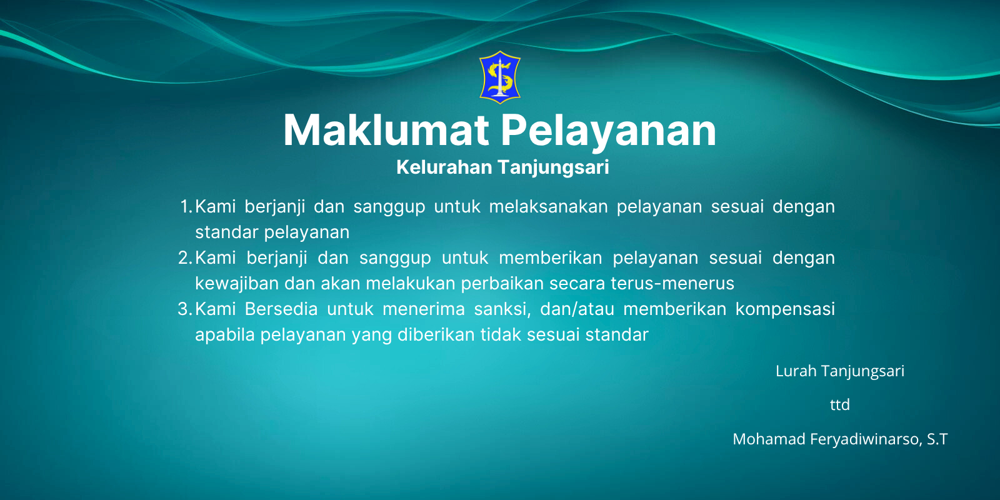
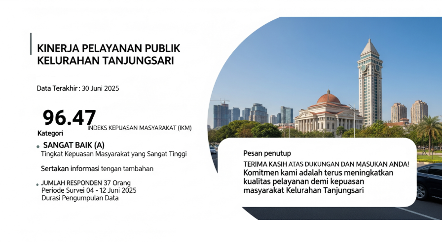
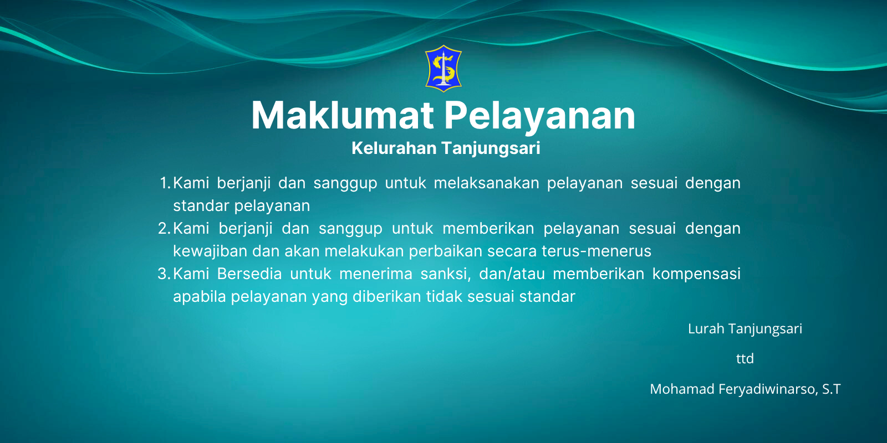
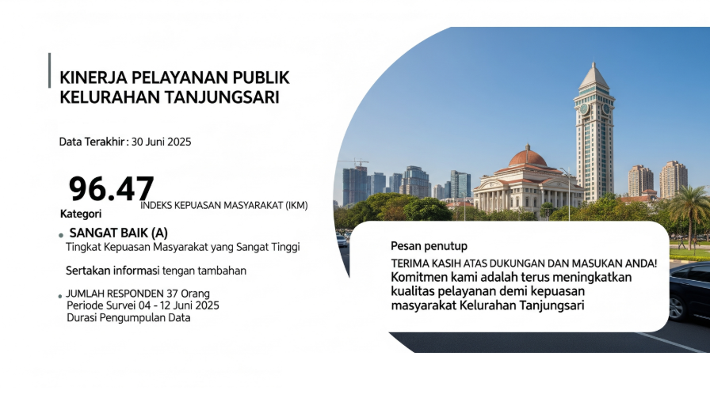
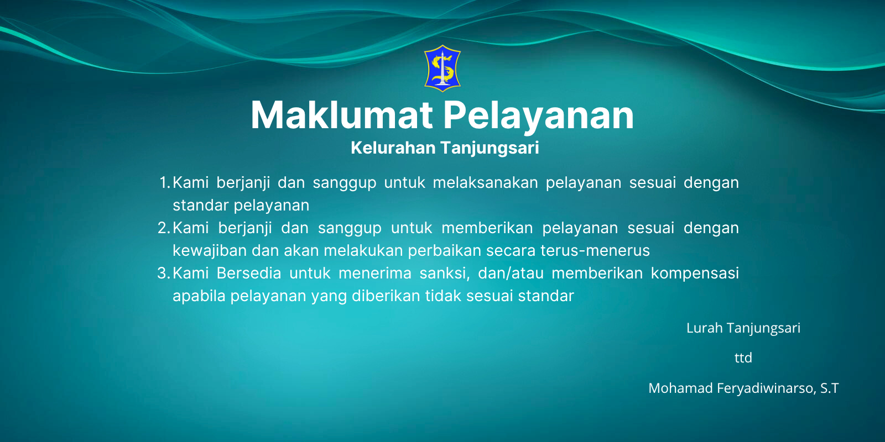
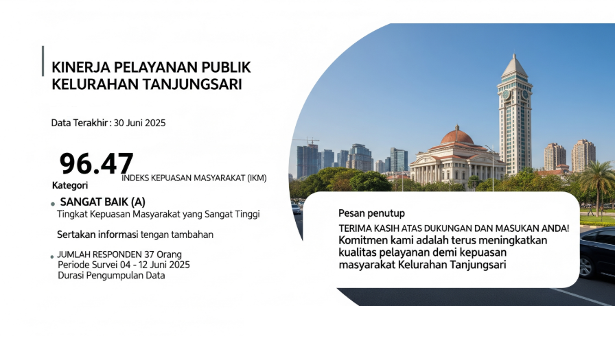
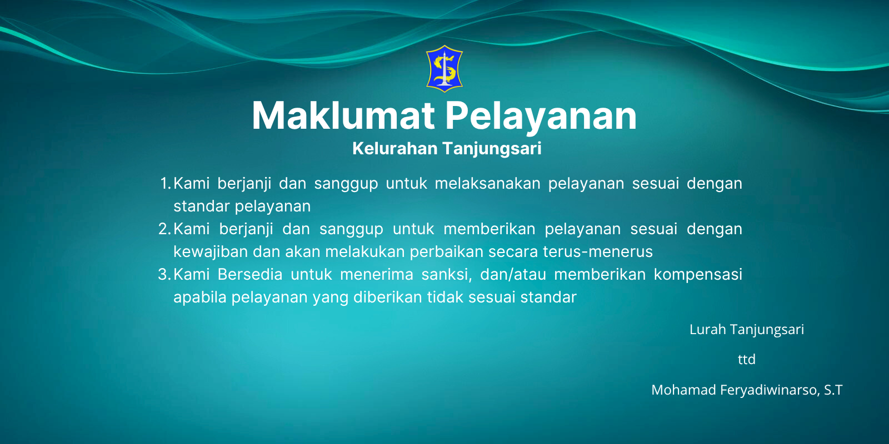
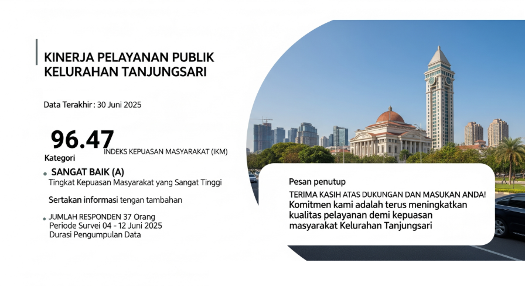

Temukan beragam informasi dan layanan masyarakat kami di sini. Kami hadir untuk mendukung kemajuan dan kesejahteraan masyarakat.
Gotong Royong menuju Surabaya Kota Dunia yang maju, humanis dan berkelanjutan.